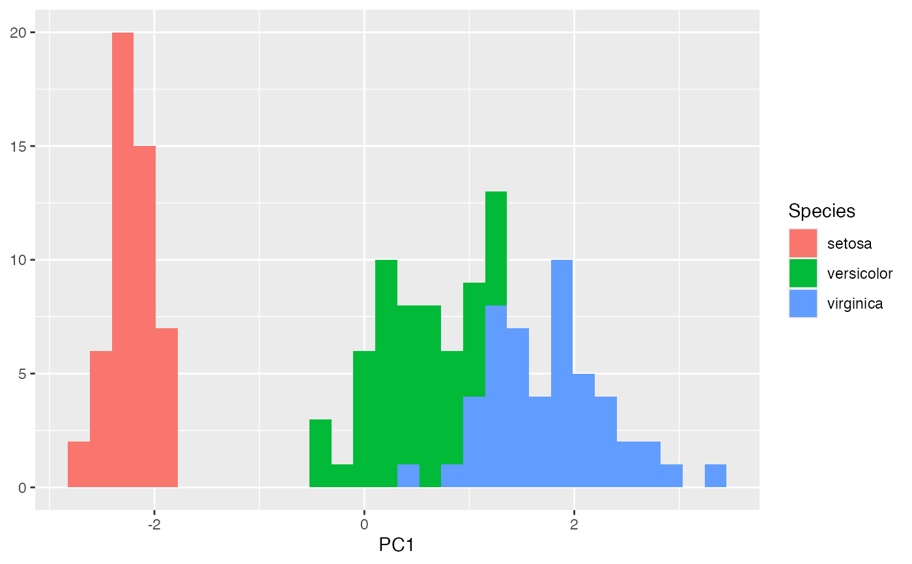
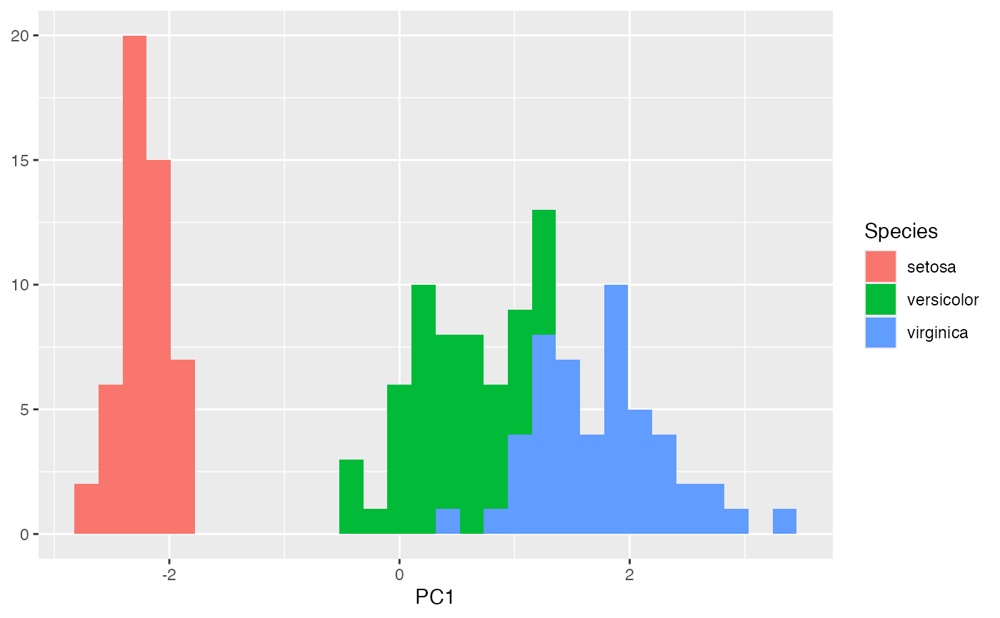

These functions return tibbles that summarize
an object of class 'tbl_ord'. tidy() output contains one row per
artificial coordinate and glance() output contains one row for the whole
ordination.
Arguments
- x, model
An object of class 'tbl_ord'.
- ...
Additional arguments allowed by generics; currently ignored.
- data
Passed to generic methods; currently ignored.
- .matrix
A character string partially matched (lowercase) to several indicators for one or both matrices in a matrix decomposition used for ordination. The standard values are
"rows","cols", and"dims"(for both).- elements
Character vector; which elements of each factor for which to render graphical elements. One of
"all"(the default),"active", or any supplementary element type defined by the specific class methods (e.g."score"for 'factanal', 'lda_ord', and 'cancord_ord' and"intraset"and"interset"for 'cancor_ord').
Value
A tibble.
Details
Three generics popularized by the ggplot2 and broom packages make use of the augmentation methods:
The
generics::tidy()method summarizes information about model components, which here are the artificial coordinates created by ordinations. The output can be passed toggplot2::ggplot()to generate scree plots. The returned columns arename: (the name of) the coordinateother columns extracted from the model, usually a single additional column of the singular or eigen values
inertia: the multidimensional varianceprop_var: the proportion of inertiaquality: the cumulative proportion of variance
The
generics::glance()method reports information about the entire model, here always treated as one of a broader class of ordination models. The returned columns arerank: the rank of the ordination model, i.e. the number of ordinatesn.row,n.col: the dimensions of the decomposed matrixinertia: the total inertia in the ordinationprop.var.*: the proportion of variance in the first 2 ordinatesclass: the class of the wrapped model object
The
ggplot2::fortify()method augments and collapses row and/or column data, depending on.matrixand.element, into a single tibble, in preparation forggplot2::ggplot(). Its output resembles that ofgenerics::augment(), though rows in the output may correspond to rows, columns, or both of the original data. If.matrixis passed"rows","cols", or"dims"(for both), thenfortify()returns a tibble whose fields are obtained, in order, viaget_*(),recover_aug_*(), andannotation_*().
The tibble is assigned a "coordinates" attribute whose value is obtained
via get_coord(). This facilitates some downstream functionality that relies
on more than those coordinates used as position aesthetics in a biplot, in
particular stat_spantree().
See also
augmentation methods that must interface with tidiers.
Examples
# illustrative ordination: PCA of iris data
iris_pca <- ordinate(iris, ~ prcomp(., center = TRUE, scale. = TRUE), seq(4L))
# use `tidy()` to summarize distribution of inertia
tidy(iris_pca)
#> # A tibble: 4 × 5
#> name sdev inertia prop_var quality
#> <fct> <dbl> <dbl> <dbl> <dbl>
#> 1 PC1 1.71 435. 0.730 0.730
#> 2 PC2 0.956 136. 0.229 0.958
#> 3 PC3 0.383 21.9 0.0367 0.995
#> 4 PC4 0.144 3.09 0.00518 1
# this facilitates scree plots
tidy(iris_pca) %>%
ggplot(aes(x = name, y = prop_var)) +
geom_col() +
scale_y_continuous(labels = scales::percent) +
labs(x = NULL, y = "Proportion of variance")
 # use `fortify()` to prepare either matrix factor for `ggplot()`
fortify(iris_pca, .matrix = "V") %>%
ggplot(aes(x = name, y = PC1)) +
geom_col() +
coord_flip() +
labs(x = "Measurement")
iris_pca %>%
fortify(.matrix = "U") %>%
ggplot(aes(x = PC1, fill = Species)) +
geom_histogram() +
labs(y = NULL)
#> `stat_bin()` using `bins = 30`. Pick better value with `binwidth`.

# ... or to prepare both for `ggbiplot()`
fortify(iris_pca)
#> # A tibble: 154 × 10
#> PC1 PC2 PC3 PC4 Species .element .matrix name center scale
#> <dbl> <dbl> <dbl> <dbl> <fct> <chr> <chr> <chr> <dbl> <dbl>
#> 1 -2.26 -0.478 0.127 0.0241 setosa active rows NA NA NA
#> 2 -2.07 0.672 0.234 0.103 setosa active rows NA NA NA
#> 3 -2.36 0.341 -0.0441 0.0283 setosa active rows NA NA NA
#> 4 -2.29 0.595 -0.0910 -0.0657 setosa active rows NA NA NA
#> 5 -2.38 -0.645 -0.0157 -0.0358 setosa active rows NA NA NA
#> 6 -2.07 -1.48 -0.0269 0.00659 setosa active rows NA NA NA
#> 7 -2.44 -0.0475 -0.334 -0.0367 setosa active rows NA NA NA
#> 8 -2.23 -0.222 0.0884 -0.0245 setosa active rows NA NA NA
#> 9 -2.33 1.11 -0.145 -0.0268 setosa active rows NA NA NA
#> 10 -2.18 0.467 0.253 -0.0398 setosa active rows NA NA NA
#> # ℹ 144 more rows
# use `glance()` to summarize the model as an ordination
glance(iris_pca)
#> # A tibble: 1 × 7
#> rank n.row n.col inertia prop.var.1 prop.var.2 class
#> <int> <int> <int> <dbl> <dbl> <dbl> <chr>
#> 1 4 150 4 596. 0.730 0.229 prcomp
# this enables comparisons to other models
rbind(
glance(ordinate(subset(iris, Species == "setosa"), prcomp, seq(4L))),
glance(ordinate(subset(iris, Species == "versicolor"), prcomp, seq(4L))),
glance(ordinate(subset(iris, Species == "virginica"), prcomp, seq(4L)))
)
#> # A tibble: 3 × 7
#> rank n.row n.col inertia prop.var.1 prop.var.2 class
#> <int> <int> <int> <dbl> <dbl> <dbl> <chr>
#> 1 4 50 4 15.2 0.765 0.119 prcomp
#> 2 4 50 4 30.6 0.781 0.116 prcomp
#> 3 4 50 4 43.5 0.783 0.120 prcomp
# use `fortify()` to prepare either matrix factor for `ggplot()`
fortify(iris_pca, .matrix = "V") %>%
ggplot(aes(x = name, y = PC1)) +
geom_col() +
coord_flip() +
labs(x = "Measurement")
iris_pca %>%
fortify(.matrix = "U") %>%
ggplot(aes(x = PC1, fill = Species)) +
geom_histogram() +
labs(y = NULL)
#> `stat_bin()` using `bins = 30`. Pick better value with `binwidth`.

# ... or to prepare both for `ggbiplot()`
fortify(iris_pca)
#> # A tibble: 154 × 10
#> PC1 PC2 PC3 PC4 Species .element .matrix name center scale
#> <dbl> <dbl> <dbl> <dbl> <fct> <chr> <chr> <chr> <dbl> <dbl>
#> 1 -2.26 -0.478 0.127 0.0241 setosa active rows NA NA NA
#> 2 -2.07 0.672 0.234 0.103 setosa active rows NA NA NA
#> 3 -2.36 0.341 -0.0441 0.0283 setosa active rows NA NA NA
#> 4 -2.29 0.595 -0.0910 -0.0657 setosa active rows NA NA NA
#> 5 -2.38 -0.645 -0.0157 -0.0358 setosa active rows NA NA NA
#> 6 -2.07 -1.48 -0.0269 0.00659 setosa active rows NA NA NA
#> 7 -2.44 -0.0475 -0.334 -0.0367 setosa active rows NA NA NA
#> 8 -2.23 -0.222 0.0884 -0.0245 setosa active rows NA NA NA
#> 9 -2.33 1.11 -0.145 -0.0268 setosa active rows NA NA NA
#> 10 -2.18 0.467 0.253 -0.0398 setosa active rows NA NA NA
#> # ℹ 144 more rows
# use `glance()` to summarize the model as an ordination
glance(iris_pca)
#> # A tibble: 1 × 7
#> rank n.row n.col inertia prop.var.1 prop.var.2 class
#> <int> <int> <int> <dbl> <dbl> <dbl> <chr>
#> 1 4 150 4 596. 0.730 0.229 prcomp
# this enables comparisons to other models
rbind(
glance(ordinate(subset(iris, Species == "setosa"), prcomp, seq(4L))),
glance(ordinate(subset(iris, Species == "versicolor"), prcomp, seq(4L))),
glance(ordinate(subset(iris, Species == "virginica"), prcomp, seq(4L)))
)
#> # A tibble: 3 × 7
#> rank n.row n.col inertia prop.var.1 prop.var.2 class
#> <int> <int> <int> <dbl> <dbl> <dbl> <chr>
#> 1 4 50 4 15.2 0.765 0.119 prcomp
#> 2 4 50 4 30.6 0.781 0.116 prcomp
#> 3 4 50 4 43.5 0.783 0.120 prcomp